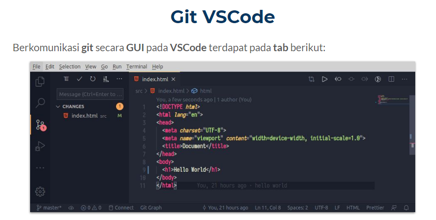
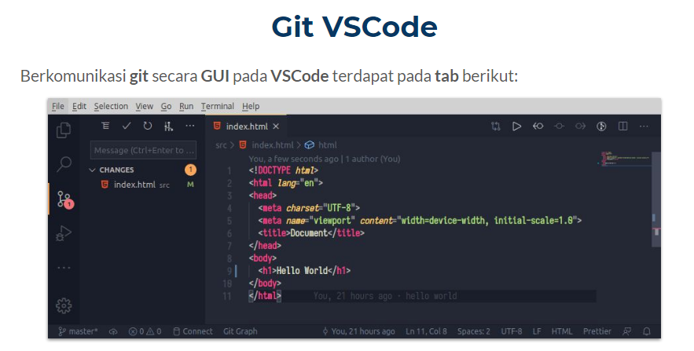

GitHub dan Git
GitHub adalah penyimpanan terbesar untuk repositori Git dan Github adalah pusat kolaborasi untuk pengembangan proyek. Sebagian besar dari semua repositori Git tersimpan di GitHub, dan banyak proyek open source menggunakan Github untuk menyimpan Git, memecahkan masalah, menyusun kode, dan hal-hal lainnya.
Git adalah Salah satu bagian dari VCS = Version Control System, disebut juga revision control system atau source code management adalah sistem yg mengelola perubahan dari sebuah dokumen, program komputer, website dan kumpulan informasi lainnya
- Sebuah sistem yg menyimpan 'rekaman/snapshot' perubahan pada source code
- Memungkinkan bekerja berkolaborasi dengan lebih baik
- Mengetahui siapa yg melakukan dan kapan sebuah perubahan terjadi
- Memungkinkan kita untuk kembali ke keadaan sebelum perubahan (checkout)
Version Control System


 
